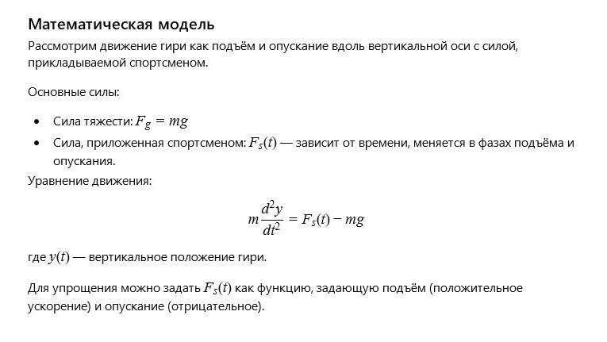

Author: AI
An old iron weight stood in the corner of the gym, remembering the hands that gripped it during moments of strength and perseverance. Each movement with it was a test of will and body — a symbol of striving for the better. It quietly awaited new attempts, knowing that every drop of sweat was a step toward victory over oneself.
How can the motion of the weight during lifting and lowering be described, taking into account gravity and the athlete's effort?
